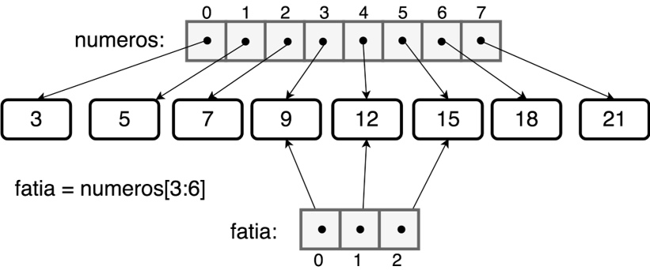
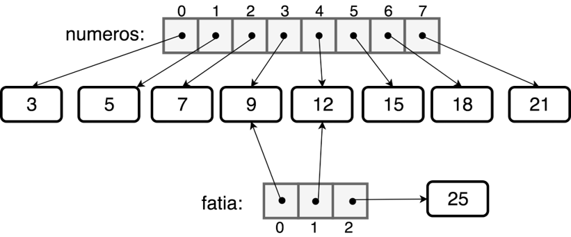
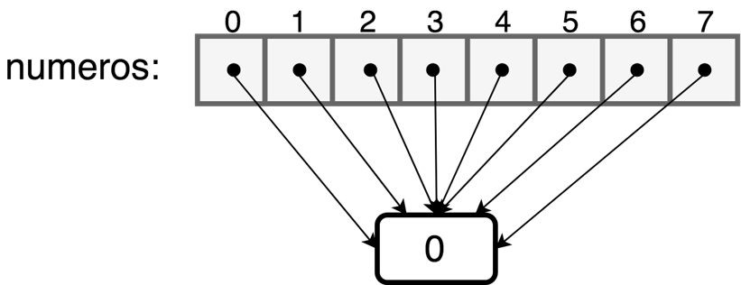
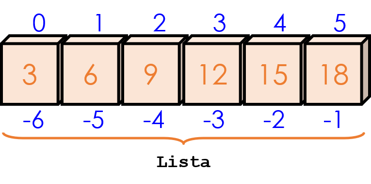

AED
- Aula 02 -


Conteúdo


Se não entender, pergunte!
Dados e Tipos de Dado
Todo dado é de um certo tipo que define sua natureza (p. ex., um nome é diferente de um valor numérico), identificando seu uso, e define as operações que podem ser realizadas com o dado;Por exemplo: podemos somar dois valores numéricos, mas NÃO podemos somar um número e uma frase.
Dados e Tipos de Dado
Tipos de dados atômicos:
- int (ex: 1; 36; 2017)
- float (ex: 3,1416)
- bool (ex: True; False)
Tipos de dados de coleção:
- Listas
- Tuplas
- String
- Dicionários
Listas
```python
numeros = [3,5,7,9,12,15,18,21]
```
Listas
```python
numeros = [3,5,7,9,12,15,18,21]
fatia = numeros[3:6]
```

E se mudar o valor na parte fatiada?
```python
fatia[2] = 25
```
E se mudar o valor na parte fatiada?
```python
fatia[2] = 25
```

* só muda a fatia
Valores iguais - referencia única
```python
numeros = [0] * 8
```

```python
numeros = [0, 0, 0, 0, 0, 0, 0, 0]
# diferente, pois os valores sao guardados em posições de
# memória distintas
```
Criação EXPLÍCITA de Listas
Para criar uma lista, utilizam-se colchetes []
```python
# Lista vazia
L = []
# Lista com elementos do mesmo tipo
L = [1,3,5]
# Lista com elementos de tipo distintos
L = [True, 2, ’3’]
```
Criação IMPLÍCITA de Listas
L = [expressão for variável in sequência]
Onde será Calculada a expressão para cada elemento.
Criação IMPLÍCITA de Listas
```python
# Exemplo
L = [x ** 2 for x in range(10)]
```
Leia assim: “Faça x ao quadrado para todo x de 0 a 9”
Criação IMPLÍCITA de Listas c/ condição
L = [expressão for variável in sequência if condição]
Selecionar elementos que satisfazem uma condição.
Criação IMPLÍCITA de Listas c/ condição
```python
# Exemplo
L = [x ** 2 for x in range(10) if x%3 ==0 ]
```
Leia assim: “Faça x ao quadrado para todo x de 0 a 9 que seja múltiplo de 3”
Criação de Lista
Python cria uma nova lista sempre que [] for usado.
```python
# Exemplo
A = []
B = []
C = D = [] # C e D são a mesma lista
C = []; D = [] # C e D são independentes
```
O que eu pode ser feito c/ lista?
- Percorrer (acessar os itens da lista)
- Incluir elementos
- Excluir elementos
- Ordenar
- Obter valores específicos (maior número, menor número, ...)
- Obter sublistas
- ...
(Algumas) Funções de Manipulação
| Função | Descrição |
| ------ | ------ |
| append | Insere no final|
| clear | Limpa toda a lista|
| copy | Produz uma cópia de L|
| count | Nº de ocorrências de um elemento|
| extend | Insere no final|
| index | Posição da primeira ocorrência de um elemento|
Funções de Manipulação (cont.)
| Função | Descrição |
| ------ | ------ |
| insert | Insere um elemento numa posição especificada|
| pop | Retorna e remove um elemento|
| remove | Remove a 1ª ocorrência de um elemento|
| reverse | Inverte as posições dos elementos|
| sort | Ordena os elementos|
append versus extend
```python
L = [1,2,3]
L.append([4,5])
print(L)
```
```python
L = [1,2,3]
L.extend([4,5])
print(L)
```
len( )
retorna o número de itens da lista L
```python
L = [3,2,7,4,1]
n = len(L)
```
L[ i ]
retorna o número de itens da lista L
```python
L = [3,2,7,4,1]
item = L[4]
```
L[inicio:fim]
retorno os elementos do início ao fim de L. Isto chama-se fatiamento de listas.
```python
L = [3,2,7,4,1]
seq = L[1:4]
```
L[inicio : fim : n]
retorna os elementos de inicio a fim em passos de n;
```python
L = [3,2,7,4,1]
# elemento sim, elemento não
seq = L[::2]
# elemento sim, elemento não
# apartir da posição 1
seq = L[1::2]
```
Manipulação

```python
Lista = [3,6,9,12,15, 18]
Lista[0] # o primeiro elemento da lista:3
Lista[-1] # o último elemento da lista: 18
Lista[6] # ERRO!
```
Manipulação
Utilizando o for-in: iterar pelos ITENS
```python
L = [3,2,7,4,1]
for item in L:
print (item)
```
Manipulação
Utilizando o for-in: iterar pelos ÍNDICES
```python
L = [3,2,7,4,1]
for index in range(len(L)):
print (index)
```
Manipulação
Utilizando o for-in: iterar pelos ITENS e ÍNDICES
```python
L = [3,2,7,4,1]
for index, item in enumerate(L):
print (index, items)
```